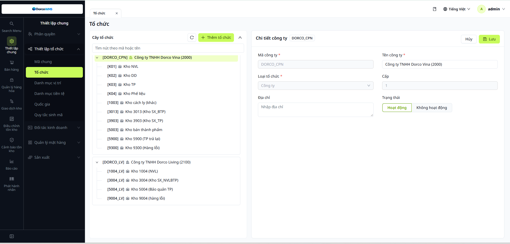
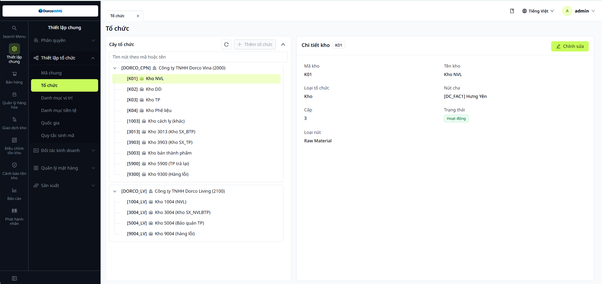
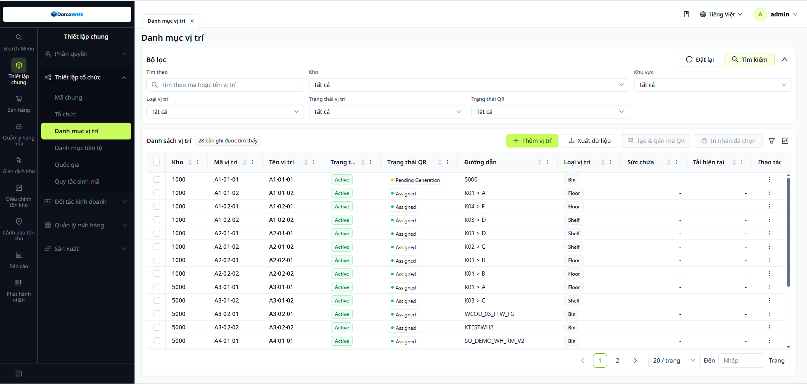
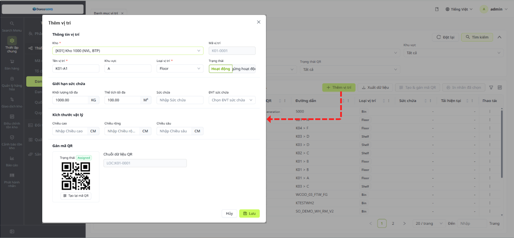
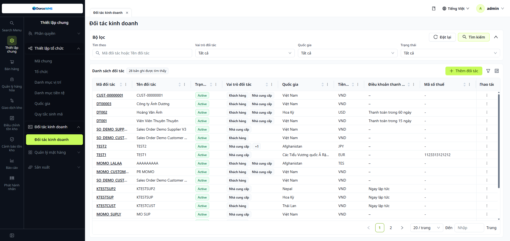

DORCO WMS
To-Be Solution Design
Giải pháp quản lý kho cho Dorco Vina và Dorco Living tại Hưng Yên và Hà Nam, kết nối SAP, WMS và máy PDA. Kèm mockup màn hình để hai bên thống nhất trước khi triển khai.
I. Mục tiêu và phạm vi
Tài liệu mô tả cách DORCO WMS vận hành sau khi triển khai, dựa trên kết quả khảo sát tại Hưng Yên (02 đến 05/2026) và Hà Nam (10/2026). Sau buổi trình bày, mục đích là chốt giải pháp và các điểm cần xác nhận, được nêu ở cuối từng phần.
Mục tiêu
- Quản lý tồn kho theo từng tem QR: biết mặt hàng, số lượng, ngày nhập và vị trí của từng pallet.
- Thay phiếu giấy, email và file Excel bằng yêu cầu, phiếu và phê duyệt ngay trên WMS.
- Kho thao tác bằng PDA, WMS tự sinh phiếu, văn phòng kho chỉ kiểm tra và duyệt, kết quả tự đồng bộ về SAP.
- Một giải pháp chung cho Hưng Yên và Hà Nam. Chỗ khác nhau giữa hai nhà máy được ghi rõ bằng nhãn HY HN.
Trong phạm vi
- Nhập, xuất, trả nguyên vật liệu và hàng gia công
- Nhập kho thành phẩm, giao hàng, nhận hàng bán bị trả lại
- Nhập khác, xuất mẫu, xuất hủy
- Chuyển kho và chuyển vị trí
- Kiểm kê hằng tháng, tra cứu tồn, báo cáo tồn kho
- Tem QR cho nguyên vật liệu và thành phẩm
- WMS Web, ứng dụng PDA và đồng bộ SAP ⇄ WMS
Ngoài phạm vi (theo khảo sát)
- Vật tư tiêu hao: nhập về dùng ngay, không theo dõi tồn trên hệ thống
- Cảnh báo tồn Min/Max: hiện chưa cần
- Quản lý hạn sử dụng: Dorco chỉ theo dõi ngày nhập
- Phân hạng hàng A/B/C
Phạm vi nhà máy và kho
| Nhà máy | Pháp nhân | Kho chính (mã SAP) | Quản lý vị trí |
|---|---|---|---|
| HYHưng Yên | Dorco Vina (2000) | 1000 NVL/BTP, 5000 thành phẩm, 5900 hàng bán trả lại, 9000 hàng lỗi | Có |
| HNHà Nam A | Dorco Vina (2000), Dorco Living (2100) | Vina: 1003, 3013, 3903, 5003, 5900, 9003. Living: 1000, 3000, 5000 | Có |
| HNHà Nam B | Dorco Vina (2000), Dorco Living (2100) | Vina: 1004, 3004, 5004. Living: 1004, 3004, 5004, 9000 | Chỉ theo kho |
| HNKho thuê ngoài | Dorco Vina | 5010 (bán thành phẩm, thành phẩm) | Theo kho |
II. Kiến trúc và phân vai
SAP vẫn là hệ thống gốc cho danh mục, đơn hàng và sổ sách. WMS quản lý tem, vị trí và thao tác kho. PDA là công cụ làm việc của nhân viên kho.
Nguyên tắc chung của mọi quy trình
- Có yêu cầu trước, thao tác sauYêu cầu nhập hoặc xuất được tạo trên SAP và đồng bộ sang WMS, hoặc tạo thẳng trên WMS. Kho chỉ thao tác theo yêu cầu.
- Kho quét tem bằng PDATem QR định danh mặt hàng và số lượng. Một pallet chỉ chứa một loại hàng.
- Phiếu tự sinh, chờ duyệtSau khi quét, WMS tự sinh phiếu nhập hoặc xuất ở trạng thái chờ duyệt. Tồn kho chỉ thay đổi khi phiếu được duyệt.
- Văn phòng kho duyệt, SAP nhận kết quảVăn phòng kho kiểm tra và duyệt trên WMS. Sau khi duyệt, kết quả đồng bộ sang SAP. Thông tin vị trí chỉ nằm trên WMS, SAP không nhận.
Vai trò và việc phải làm
| Vai trò | Dùng gì | Làm gì |
|---|---|---|
| BP Mua | WMS Web | Tạo lệnh nhập NVL hằng ngày (hoặc import), yêu cầu trả NCC, yêu cầu xuất đi gia công, in tem NVL gửi NCC dán |
| BP Sản xuất | SAP, WMS Web | Tạo trên SAP: yêu cầu xuất NVL, trả NVL thừa, nhập thành phẩm, nhập gia công về. In tem thành phẩm và tem NVL thừa trên WMS |
| BP Kho (nhân viên kho) | PDA | Nhập, xuất, chuyển kho, chuyển vị trí, kiểm kê bằng cách quét tem. Lập lệnh giao hàng từ SO |
| Văn phòng kho | WMS Web | Kiểm tra và duyệt phiếu nhập, xuất, chuyển. Theo dõi tồn và kiểm kê |
| QC | Thủ công | Kiểm tra hàng nhập, báo OK hoặc NG |
| XNK, Kinh doanh | SAP, email | Gửi kế hoạch giao hàng, xác nhận tờ khai, đơn hàng trả về. Kinh doanh yêu cầu xuất hủy khi đơn bị hủy |
Dữ liệu đồng bộ SAP ⇄ WMS
SAP gửi sang WMS
- Danh mục: đối tác (NCC, khách hàng), mặt hàng, kho, loại giao dịch kho, loại phiếu kho
- Yêu cầu nhập NVL, trả lại NCC, xuất NVL, trả NVL từ chuyền
- Yêu cầu nhập kho TP, xuất kho TP, nhập hàng bán trả lại, đổi hàng, chuyển kho
WMS gửi về SAP
- Kết quả nhập, xuất NVL và thành phẩm, trả NCC, trả từ chuyền
- Xuất đi gia công, nhập gia công về
- Kết quả nhập hàng bán trả lại, đổi hàng, chuyển kho
- Kết quả kiểm kê, điều chỉnh tồn, tồn kho hằng ngày, chốt tồn cuối tháng
Chuyển vị trí trong cùng kho không đồng bộ sang SAP, vì SAP không quản lý vị trí.
III. Giải pháp hệ thống
Giải pháp chi tiết cho từng nhóm nghiệp vụ, kèm mockup màn hình trên WMS Web và PDA. Mỗi phần mô tả quy trình To-Be, người thực hiện, hệ thống tham gia (SAP, WMS, PDA) và các điểm cần xác nhận.
1. Master data
Danh mục nền đồng bộ từ SAP. Tem QR là chìa khóa của toàn bộ thao tác kho: mỗi tem định danh một pallet.
Master data
| Danh mục | Nguồn | Cách quản lý trên WMS |
|---|---|---|
| Pháp nhân và kho | SAP | Đồng bộ từ SAP. Cấu trúc cây pháp nhân, kho |
| Vị trí kho (Location) | WMS | Chỉ quản lý trên WMS, dạng kệ-tầng-khoang như A1-1-3. SAP không nhận thông tin vị trí. HNHà Nam A quản lý vị trí, Hà Nam B chỉ quản lý theo kho |
| Mặt hàng | SAP | Đồng bộ từ SAP. WMS lưu ngày nhập của từng tem để theo dõi hàng tồn lâu. HNHàng chế xuất (miễn thuế) để khu riêng và có thông tin phân biệt |
| Đối tác (NCC, khách hàng) | SAP | Đồng bộ từ SAP |
| Loại giao dịch, loại phiếu kho | SAP | Đồng bộ từ SAP và map với nghiệp vụ trên WMS |
Tem QR
Tem nguyên vật liệu
- Tem QR định danh mặt hàng và số lượng, một pallet chỉ một loại hàng.
- Hỗ trợ tách tem khi xuất dở bó hoặc chia hàng theo SO. Tem phát hành chỉ định danh mặt hàng, số lượng gán khi nhập trên app.
- HYNCC dán tem trước khi giao.
- HNKho dán tem khi hàng về.
Tem thành phẩm
- BP Sản xuất in tem trên WMS: mã hàng, tên hàng, ngày sản xuất, lô, Batch no (theo yêu cầu khách), SO.
- Đề xuất dán tem theo thùng và gộp tem theo pallet.
- Dùng chung một mẫu tem cho Hưng Yên và Hà Nam.
- Gộp, tách barcode để ghép pallet.
1.1Danh mục tổ chức
Thiết lập chung › Thiết lập tổ chức › Tổ chức

Danh mục tổ chức dùng thiết lập cơ cấu tổ chức công ty, được đồng bộ từ SAP qua WMS. Không cho phép thêm mới, sửa trên WMS.
1.2Danh mục kho
Thiết lập chung › Thiết lập tổ chức › Tổ chức

Danh mục kho được đồng bộ từ SAP về WMS. Không cho phép thêm mới, sửa trên WMS.
1.3Danh mục vị trí
Thiết lập chung › Thiết lập tổ chức › Danh mục vị trí


Danh mục vị trí dùng quản lý các vị trí lưu trữ trong kho (Bin, Shelf, Floor). Người dùng tìm kiếm theo bộ lọc, thêm vị trí mới (chọn kho, nhập tên, loại, giới hạn sức chứa), tạo và gán mã QR, in nhãn vị trí. Mã vị trí do hệ thống tự sinh.
- Vị trí chỉ quản lý trên WMS, không đồng bộ từ SAP.
- Mỗi vị trí có một mã QR để PDA quét khi nhập, xuất, chuyển vị trí.
1.4Đối tác kinh doanh
Thiết lập chung › Đối tác kinh doanh

123456Hướng dẫn thao tác
Lọc theo mã/tên đối tác, vai trò, quốc gia, trạng thái.
Tạo đối tác mới.
Bấm vào mã để xem chi tiết đối tác.
Một đối tác có thể vừa là khách hàng vừa là nhà cung cấp.
Thông tin dùng cho chứng từ mua và bán.
Xem hoặc sửa đối tác.
- Nhà cung cấp dùng cho nhập NVL, trả NCC. Khách hàng dùng cho giao hàng, hàng bán trả lại.
1.5Phát hành tem QR nguyên vật liệu
Phát hành nhãn
| Mã hàng | Tên hàng | Quy cách | SL nhập | Số tem cần in |
|---|---|---|---|---|
| NVL-0412 | Dải thép lưỡi dao | 500 / pallet | 2.000 | 4 2 |
| NVL-0877 | Nhựa PP hạt | 1.000 kg / pallet | 3.000 | 3 |
| NVL-1203 | Hộp carton 3 lớp | 800 / pallet | 2.400 | 3 |
Hướng dẫn thao tác
Chọn lệnh nhập cần in tem. Lệnh có SO thì tem gắn SO.
Tính từ số lượng nhập chia quy cách pallet. Một pallet chỉ một loại hàng.
Ngày sản xuất, NCC, order, checklist, mã hàng, tên hàng.
In tem, có thể in lại khi hàng nhận khác lệnh.
- HY: NCC dán tem trước khi giao. HN: kho dán tem khi hàng về.
2. Quy trình nguyên vật liệu
Bốn quy trình: nhập từ nhà cung cấp (quy trình 1), trả NCC, xuất cho sản xuất và nhận lại hàng dư (quy trình 2).
Quy trình 1: Mua và nhập NVL
- Kế hoạch và lệnh nhậpBP MuaWMSBP Mua nhập hoặc import lệnh nhập hằng ngày trên WMS, thay cho email gửi file Excel. Không cần phê duyệt.
- In tem và dán temBP Mua, NCC hoặc khoWMSIn tem pallet từ lệnh nhập. Tem dán trước khi giao hoặc khi hàng về, tùy nhà máy.
- Nhập hàng và QCBP Kho, QCPDAQCQuét tem bằng PDA. Hàng OK lên vị trí, hàng NG chuyển khu NG chờ xuất trả.HYNhập vào khu chờ, QC xong chuyển lên vị trí.HNKho kiểm và QC xong thì nhập vào vị trí.
- Phiếu nhập kho tự sinhVăn phòng khoWMSSAPWMS tự sinh phiếu chờ duyệt. Văn phòng kho kiểm tra và duyệt trên WMS.⇄ WMS đồng bộ phiếu nhập kho sang SAP
- Trả hàng NG cho NCCBP Mua (HY)WMSSAPTạo yêu cầu trả từ phiếu nhập, tick chọn dòng cần trả. Xuất trả trên app hoặc web.⇄ Phiếu xuất đồng bộ về SAP
Quy trình 2: Xuất dùng NVL và nhận lại hàng dư
- Yêu cầu xuất NVLBP Sản xuấtSAPWMSTạo yêu cầu xuất trên SAP, đồng bộ sang WMS.
- Xuất kho bằng PDABP KhoPDAQuét tem theo yêu cầu. Cho phép xuất lẻ pallet, hệ thống trừ dần số lượng trên tem.
- Phiếu xuất tự sinhVăn phòng khoWMSSAPVăn phòng kho kiểm tra và duyệt. Kết quả đồng bộ sang SAP.
- Trả NVL thừa từ chuyềnBP Sản xuất, BP KhoSAPWMSPDATạo yêu cầu trả trên SAP. Hàng dở kiện thì BP Sản xuất in và dán tem mới. Kho quét PDA nhập lại, văn phòng kho duyệt, đồng bộ SAP.
Vật tư tiêu hao nhập về dùng ngay, không theo dõi tồn kho trên hệ thống.
Màn hình
| Yêu cầu | PO | NCC | Mã hàng | SL | Số tem | Trạng thái |
|---|---|---|---|---|---|---|
| YC-1016-01 | PO-4500123 | NCC A | NVL-0412 | 2.000 | 4 | Mới |
| YC-1016-02 | PO-4500131 | NCC B | NVL-0877 | 3.000 | 3 | Mới |
| YC-1015-07 | PO-4500098 | NCC A | NVL-1203 | 2.400 | 3 | Đang nhập 3 |
- 1BP Mua tạo lệnh nhập hằng ngày trên WMS hoặc import từ Excel, thay cho email gửi file kế hoạch.
- 2Quy cách thùng và pallet giúp WMS tính số tem cần in.
- 3Trạng thái theo dõi tiến độ nhập: Mới, Đang nhập, Hoàn tất.
Nhân viên quét tem là xong. Phiếu nhập tự sinh, văn phòng kho duyệt trên WMS.
HYHàng vào khu chờ, QC xong mới chuyển lên vị trí.
HNKho kiểm và QC xong rồi mới nhập vào vị trí.
Danh sách 1
| PNK-1016-021 NVL-1203, 800 | Chờ duyệt |
| PNK-1016-020 NVL-0877, 3.000 | Chờ duyệt |
| PNK-1015-044 NVL-0412, 2.000 | Đã duyệt |
Chi tiết PNK-1016-021 2
| Tem | Mã hàng | SL | Kho | Vị trí |
|---|---|---|---|---|
| P-88120 | NVL-1203 | 800 | 1000 | QC-WAIT |
Sau khi duyệt: ⇄ Đã đồng bộ SAP 4
- 1Phiếu do PDA tự sinh, văn phòng kho thấy ngay trong danh sách chờ duyệt.
- 2Kiểm tra từng tem, mặt hàng, số lượng thực nhận, kho và vị trí.
- 3Duyệt phiếu thì tồn kho WMS tăng.
- 4Kết quả nhập đồng bộ sang SAP, văn phòng kho không phải nhập lại.
| Chọn | Mã hàng | Tem | SL đã nhập | SL trả | Lý do |
|---|---|---|---|---|---|
| NVL-0412 | P-88001 | 500 | 500 | QC không đạt | |
| NVL-0412 | P-88002 | 500 | |||
| NVL-0412 | P-88003 | 500 |
- 1Tạo yêu cầu trả từ phiếu nhập đã có, rồi tick chọn các dòng cần trả.
- 2Hàng NG tập trung ở khu NG. Nếu NG phải tách pallet thì tách cả tem.
- 3Xuất trả xong, phiếu xuất đồng bộ về SAP.
Cho phép xuất lẻ pallet. Hệ thống trừ dần số lượng còn lại trên tem.
Xuất nhiều hơn yêu cầu thì BP Sản xuất sửa yêu cầu trên SAP, đồng bộ lại sang WMS rồi mới xuất.
3. Quy trình gia công
Hàng đi gia công luôn có hai chiều: xuất đi và nhận về (quy trình 3).
Quy trình 3: Xuất đi và nhận về
- Yêu cầu xuất hàng đi gia côngBP Mua hoặc BP Sản xuấtWMSTạo trên WMS dựa vào PR, PO gia công.
- Xuất kho bằng PDABP KhoPDAXuất lẻ thùng, trừ dần số lượng trên tem. Xuất nhiều hơn hoặc ít hơn thì sửa yêu cầu.
- Phiếu xuất tự sinh, duyệtVăn phòng khoWMSSAPKiểm tra, duyệt, đồng bộ phiếu xuất sang SAP.
- Yêu cầu nhập hàng gia công vềBP Sản xuấtSAPWMSTạo trên SAP, đồng bộ sang WMS. In tem mới cho hàng nhận về.
- Nhập kho bằng PDA, duyệtBP Kho, Văn phòng khoPDAWMSSAPBP Sản xuất giao hàng cho kho, kho quét PDA nhập. Phiếu nhập tự sinh, văn phòng kho duyệt và đồng bộ sang SAP.
Màn hình
| Mã hàng | Tên hàng | Loại | SL cần xuất | SL đã xuất |
|---|---|---|---|---|
| BTP-0210 | Thân dao cạo | BTP | 5.000 | 3.000 2 |
| NVL-0412 | Dải thép lưỡi dao | NVL | 2.000 | 0 |
- 1Yêu cầu xuất đi gia công tạo trên WMS dựa trên PR hoặc PO gia công.
- 2Có thể xuất nhiều lần cho một yêu cầu. Xuất nhiều hơn hoặc ít hơn thì sửa yêu cầu.
- 3Xuất lẻ thùng thao tác đơn giản. Văn phòng kho duyệt phiếu và đồng bộ sang SAP.
4. Quy trình thành phẩm
Từ khi sản xuất xong đến khi giao khách, và khi hàng bán bị trả lại (quy trình 4 và 5).
Quy trình 4: Nhập kho thành phẩm
- Yêu cầu nhập kho TPBP Sản xuấtSAPWMSTạo yêu cầu theo số lượng đã QC đạt trên SAP, đồng bộ sang WMS.
- In và dán tem thành phẩmBP Sản xuấtWMSPhát hành tem trên WMS, dán vào hàng.
- Quét tem nhập khoBP KhoPDAQuét tem bằng PDA, WMS tự sinh phiếu nhập kho thành phẩm.
- Xác nhận phiếu nhậpVăn phòng khoWMSSAPXác nhận để tăng tồn thành phẩm, đồng bộ kết quả sang SAP.
Quy trình 5A: Giao hàng thành phẩm
- Đơn bán hàng nội bộKinh doanh, BP Sản xuấtSAPWMSLập Vina SO trên SAP, đồng bộ sang WMS.
- Lệnh giao hàngBP KhoWMSLập lệnh giao từ SO trên WMS, giao nhiều lần cho một SO, gán mã vạch tem cho từng mã hàng.
- Quét tem giao hàngBP KhoPDAQuét tem bằng PDA, WMS tự sinh phiếu giao hàng.
- Xác nhận phiếu giao hàngVăn phòng khoWMSSAPXác nhận để giảm tồn, đồng bộ kết quả sang SAP.
Quy trình 5B: Hàng bán bị trả lại
- Yêu cầu trả hàngVăn phòng khoWMSKhi XNK xong tờ khai nhập khẩu, lập yêu cầu trả hàng từ PO SAP, từ phiếu giao hàng hoặc thủ công.
- In tem mới (nếu cần)BP KhoWMSChỉ khi trả không nguyên pallet.
- Phiếu trả hàng, xác nhậnVăn phòng khoWMSSAPHàng ở vị trí tạm trong kho 5900. Xác nhận phiếu để tăng tồn, đồng bộ sang SAP.
- Hàng thực tế vềBP KhoPDAQuét QR tem, chuyển từ vị trí tạm sang vị trí thật.
Tái sử dụng hoặc tái xuất sau khi nhận về đi theo quy trình chuyển kho (mục III.5): Hưng Yên 5900 sang 3000 hoặc 5000, Hà Nam 5900 sang 3903 hoặc 5003.
Màn hình
| Yêu cầu SAP | Mã hàng | SL đạt QC | Lô | Ngày SX | Trạng thái |
|---|---|---|---|---|---|
| NTP-7731 | TP-1101 Dao cạo 3 lưỡi | 12.000 | L261015A | 15/10/2026 | Chờ nhập |
| NTP-7732 | TP-1102 Dao cạo 5 lưỡi | 8.000 | L261015B | 15/10/2026 | Chờ nhập |
- 1Yêu cầu nhập kho do BP Sản xuất tạo trên SAP theo số lượng đã QC đạt, đồng bộ sang WMS.
- 2BP Sản xuất phát hành tem thành phẩm trên WMS rồi dán vào hàng. Kho quét tem để nhập, WMS tự sinh phiếu, xác nhận thì tăng tồn.
- 3Thay cho việc in Delivery Note, sửa lệnh trên SAP và in lại như hiện nay.
| Mã hàng | SL đơn | Đã giao | Lần giao này | Đơn vị | Mã vạch tem |
|---|---|---|---|---|---|
| TP-1101 | 24.000 | 12.000 | 6.000 2 | Pallet | Đã gán 3 |
| TP-1102 | 8.000 | 0 | 8.000 | Thùng | Chưa gán |
- 1Đơn bán hàng nội bộ (Vina SO) đồng bộ từ SAP. Kho lập lệnh giao hàng từ đơn này.
- 2Mỗi lần giao ghi số lượng thực tế, theo pallet hoặc lẻ thùng.
- 3Gán mã vạch tem cho từng mã hàng để PDA đối chiếu khi quét.
- 4Lưu lệnh, nhân viên kho lấy ra thực hiện trên PDA.
Quét sai mã hàng hoặc sai đơn sẽ bị chặn. Phiếu giao tự sinh, văn phòng kho xác nhận để giảm tồn và đồng bộ sang SAP.
| Mã hàng | SL trả | Cách trả | Cần in tem mới | Vị trí tạm |
|---|---|---|---|---|
| TP-1101 | 1.000 | Nguyên pallet, từ phiếu giao | Không (dùng tem cũ) | 5900-TMP 2 |
| TP-1102 | 300 | Thủ công, lẻ pallet | Có 3 | 5900-TMP |
- 1Khi XNK thông tin xong tờ khai nhập khẩu, PO trả hàng từ SAP thành yêu cầu trả hàng trên WMS. Có thể tạo từ phiếu giao hàng hoặc thủ công.
- 2Hàng về đặt ở vị trí tạm. Khi hàng thực tế về, quét QR tem để chuyển sang vị trí thật.
- 3Trả không nguyên pallet thì in và dán tem mới, trả nguyên pallet thì dùng tem cũ.
- 4Lập phiếu trả hàng, xác nhận phiếu để tăng tồn kho.
5. Nhập xuất khác, chuyển kho
Các nghiệp vụ ngoài luồng mua, sản xuất, bán: nhập xuất khác (quy trình 6), chuyển kho và chuyển vị trí (quy trình 7).
Quy trình 6: Nhập xuất khác
Nhập khác
- Lập yêu cầu nhập khácVăn phòng khoWMSLập trên WMS khi phát sinh. Hiện chưa phát sinh nghiệp vụ này, tem NVL sai thì trả lại NCC.
- In, dán tem, quét nhậpBP KhoWMSPDAPhát hành tem, dán, quét bằng PDA.
- Xác nhận phiếuVăn phòng khoWMSSAPTăng tồn, đồng bộ sang SAP.
Xuất khác: xuất mẫu, xuất hủy
- Yêu cầu xuấtSX, QA, Kinh doanhSAPWMSTạo trên SAP, đồng bộ sang WMS, kèm cost center.
- Quét tem xuấtBP KhoPDAQuét tem hàng cần xuất, phiếu xuất tự sinh.
- Xác nhận phiếu xuấtVăn phòng khoWMSSAPGiảm tồn, đồng bộ sang SAP.
Quy trình 7: Chuyển kho và chuyển vị trí
A. Chuyển sang kho khác
- Yêu cầu chuyển khoVăn phòng khoWMSKho nguồn, kho đích, lý do, người phụ trách, mặt hàng, số lượng.
- Phiếu chuyển khoBP KhoPDAWMSLập từ yêu cầu, quét và gán tem thực tế cho từng dòng.
- Duyệt phiếuVăn phòng khoWMSGiảm tồn nguồn, tăng tồn đích, cập nhật tiến độ yêu cầu.
- Đóng yêu cầuHệ thốngWMSSAPTự đóng khi chuyển đủ, đồng bộ sang SAP.
B. Chuyển vị trí trong kho
- Quét vị trí nguồnBP KhoPDAChọn chức năng Chuyển vị trí trên app, quét vị trí nguồn.
- Quét tem hàngBP KhoPDAXác định pallet hoặc thùng cần chuyển.
- Quét vị trí đíchBP KhoPDAQuét mã vị trí đích.
- Phiếu tự lập, duyệtVăn phòng khoWMSChuyển tồn từ vị trí nguồn sang đích. Không đồng bộ SAP.
Hiện nay phụ trách kho tự sắp xếp vị trí, ghi vị trí cũ và mới lên phiếu giấy (Hà Nam) hoặc không ghi. Sau khi triển khai, mọi lần chuyển đều có phiếu.
Màn hình
| Mã hàng | SL yêu cầu | Tem quét | Tiến độ |
|---|---|---|---|
| BTP-0210 | 5.000 | 3 tem, 3.000 2 | |
| BTP-0211 | 1.200 | 2 tem, 1.200 |
- 1Kho nguồn, kho đích, lý do, người phụ trách. Chuyển giữa hai kho cùng hoặc khác nhà máy đều phải có yêu cầu.
- 2Quét và gán tem QR thực tế cho từng dòng hàng. Kiểm tra vị trí nguồn, đích và số lượng.
- 3Yêu cầu tự đóng khi chuyển đủ. Kiểm tra lại ở màn hình Giám sát tồn theo vị trí.
- 4Duyệt phiếu để chuyển tồn và đồng bộ sang SAP.
Chọn chức năng Chuyển vị trí trên app.
Ba lần quét: vị trí nguồn, tem hàng, vị trí đích. Hệ thống tự lập phiếu, văn phòng kho xem và duyệt.
Không đồng bộ sang SAP vì SAP không quản lý vị trí.
| Yêu cầu | Loại | Lý do | Cost center | Phê duyệt |
|---|---|---|---|---|
| XH-0412 | Xuất hủy | Hàng NG, SX yêu cầu | CC-1210 2 | Đã duyệt |
| XH-0413 | Xuất hủy | Tồn trên 6 tháng | CC-1210 | Đã duyệt |
| XH-0414 | Xuất mẫu | QA đề xuất | CC-3300 | Chờ duyệt 3 |
- 1Yêu cầu xuất mẫu, xuất hủy tạo trên SAP, đồng bộ sang WMS.
- 2Yêu cầu kèm thông tin cost center.
- 3Chỉ khi đã được duyệt, kho mới được quét tem xuất.
- 4Quét tem hàng bằng PDA, phiếu xuất tự sinh, xác nhận để giảm tồn và đồng bộ sang SAP.
6. Kiểm kê và tồn kho
Kiểm kê hằng tháng bằng PDA (quy trình 8) và các công cụ tra cứu tồn.
Quy trình 8: Kiểm kê hằng tháng
- Chốt số tồnVăn phòng khoWMSChọn tháng kiểm kê và chốt số tồn trên WMS.
- Quét tem kiểm kêBP KhoPDAQuét tem từng pallet bằng PDA và nhập số đếm.
- Tổng hợp kết quảVăn phòng khoWMSSo sánh số đếm với tồn. Chênh lệch được kiểm tra lại và ghi lý do.
- Duyệt điều chỉnhBộ phận có thẩm quyềnWMSSAPDuyệt thì hệ thống tự tạo phiếu nhập, xuất điều chỉnh và đồng bộ kết quả sang SAP.
Hiện nay: Hưng Yên kiểm kê cuối tháng và kế toán kiểm theo quý, Hà Nam in tồn từ SAP, điền phiếu dán ở từng pallet rồi nhập số vào SAP. Chênh lệch phải xin duyệt qua email.
Tiện ích tồn kho
FIFO
Hàng theo đơn thì xuất theo đơn. Hàng không theo đơn, nhất là bán thành phẩm, WMS gợi ý lô xuất theo FIFO trên lệnh xuất.
Tra cứu tồn
- Theo mã hàng, đối tác, PO, lô
- Theo barcode, kèm đơn hàng, ngày nhập, vị trí
- Theo giao dịch và phiếu
- Lịch sử barcode
Màn hình
| Vị trí | Mã hàng | Tồn WMS | Đếm thực tế | Chênh lệch | Lý do |
|---|---|---|---|---|---|
| A1-1-3 | NVL-0412 | 800 | 780 | -20 | Kiểm tra lại 2 |
| A2-1-1 | NVL-1203 | 800 | 810 | +10 | Ghi lý do |
| A2-2-4 | NVL-0877 | 1.000 | 1.000 | 0 | Khớp |
- 1Chốt số tồn theo tháng trước khi kiểm. Sau khi quét, WMS so sánh số đếm với số chốt.
- 2Dòng chênh lệch được tô đỏ, ghi lý do hoặc kiểm tra lại.
- 3Điều chỉnh tồn tạo phiếu nhập hoặc xuất điều chỉnh tự động, không phải tạo tay trên SAP.
- 4Người duyệt điều chỉnh trên WMS còn chờ khách chốt.
Tồn trên hệ thống không hiển thị để đếm khách quan.
Kho quét tem từng pallet. Thay cho việc in tồn, điền phiếu giấy và nhập lại vào SAP.
| Vị trí | Mã hàng | Tem | SL | Ngày nhập | Số ngày tồn |
|---|---|---|---|---|---|
| A1-1-3 | NVL-0412 | P-88001 | 800 | 12/03/2026 | 216 3 |
| A1-1-3 | NVL-0412 | P-88050 | 500 | 20/09/2026 | 25 |
| A1-1-4 | NVL-0877 | P-87122 | 1.000 | 02/10/2026 | 13 |
- 1Tìm vị trí ra mặt hàng, hoặc tìm mặt hàng ra vị trí.
- 2Lịch sử barcode cho thấy mọi giao dịch của một tem: nhập, xuất, chuyển vị trí.
- 3Số ngày tồn tính từ ngày nhập. Hàng tồn trên 6 tháng được làm nổi bật để cân nhắc xuất hủy.
7. Báo cáo
Giữ mẫu báo cáo tồn kho của SAP mà Dorco đang dùng, bổ sung các trường theo yêu cầu khảo sát.
| Báo cáo | Nội dung |
|---|---|
| Tồn kho | Theo mẫu SAP, bổ sung trường theo yêu cầu |
| Tồn theo vị trí | Tìm vị trí ra mặt hàng và tìm mặt hàng ra vị trí |
| Tồn lâu | Theo ngày nhập hoặc ngày sản xuất, ví dụ hàng nhập quá 6 tháng |
| Ngày mua, nhập gần nhất | Của tất cả nguyên vật liệu |
| Chứng từ nhập xuất NVL | Lọc theo nhà cung cấp, PO hoặc yêu cầu xuất của sản xuất |
Màn hình
| Mã hàng | Tên hàng | Kho | SL | Ngày nhập gần nhất | Số ngày tồn |
|---|---|---|---|---|---|
| NVL-0412 | Dải thép lưỡi dao | 1003 | 800 | 12/03/2026 | 216 2 |
| BTP-0210 | Thân dao cạo | 3013 | 1.500 | 28/02/2026 | 228 |
| NVL-1203 | Hộp carton 3 lớp | 1003 | 2.400 | 15/10/2026 | 1 |
- 1Lọc theo số tháng tồn và theo kho.
- 2Hàng tồn quá ngưỡng (ví dụ 6 tháng) được tô đỏ để thủ kho đề xuất xuất hủy.
- 3Báo cáo theo mẫu SAP đang dùng, thêm tồn theo vị trí và ngày nhập gần nhất của NVL.